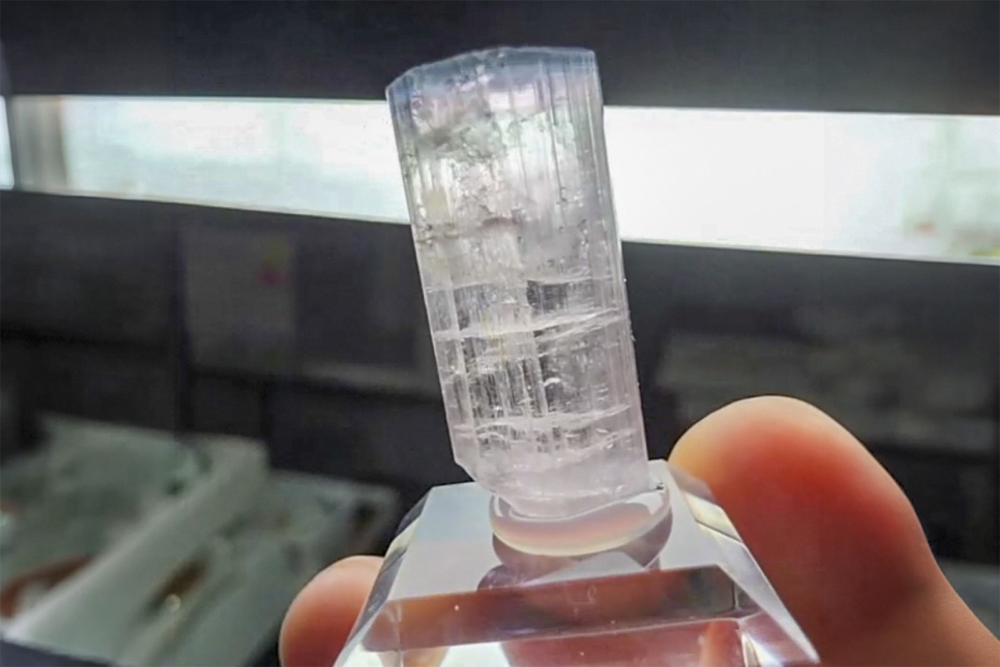

Elbaite
"Pale Pink with Thin Blue Cap Tourmaline TN"
VIII-10360
Paprok, Kamdesh District, Nuristan, Afghanistan
Purchased 5/8/2026 from Bobby Holley Fine Minerals for $25.00
Core Collection • In Collection
Details
Storage Type: Drawer
Storage Location: C2D1 Small Wonders
Size class: TBD (0)
Dimensions: Unrecorded
Mass: Unrecorded
Luster: Unrecorded